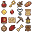
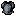
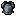
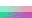
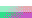

Guarded Auto refinement: research only
Native pixels plus nearest enlarged views. RGB centroid changes shared target identity; subset swaps retain it. Mean point error is not semantic quality. See results.json for every metric, guard rejection and block coverage.
armor K2
Original

Current Auto64 + cap

centroid mean: 0.0175342
centroid strict: 0.0176270

centroid rare: 0.0176270

subset-swaps mean: 0.0176270

subset-swaps strict: 0.0176270

subset-swaps rare: 0.0176270
rare-exact-red-eye K4
Original
Current Auto64 + cap

centroid mean: 0.0014006
centroid strict: 0.0016434

centroid rare: 0.0016434

subset-swaps mean: 0.0016434

subset-swaps strict: 0.0016434

subset-swaps rare: 0.0016434

rare-exact-red-eye K8
Original
Current Auto64 + cap

centroid mean: 0.0009057
centroid strict: 0.0010402

centroid rare: 0.0010402

subset-swaps mean: 0.0010402

subset-swaps strict: 0.0010402

subset-swaps rare: 0.0010402
rare-muted-eye K4
Original
Current Auto64 + cap

centroid mean: 0.0013686
centroid strict: 0.0016136

centroid rare: 0.0016136

subset-swaps mean: 0.0016136
subset-swaps strict: 0.0016136

subset-swaps rare: 0.0016136

rare-muted-eye K8
Original
Current Auto64 + cap

centroid mean: 0.0008734
centroid strict: 0.0010126

centroid rare: 0.0010126

subset-swaps mean: 0.0010126

subset-swaps strict: 0.0010126

subset-swaps rare: 0.0010126

rare-outline-material K2
Original
Current Auto64 + cap

centroid mean: 0.0012687
centroid strict: 0.0013028

centroid rare: 0.0013028

subset-swaps mean: 0.0013028

subset-swaps strict: 0.0013028

subset-swaps rare: 0.0013028
rare-outline-material K4
Original
Current Auto64 + cap

centroid mean: 0.0008799
centroid strict: 0.0009168

centroid rare: 0.0009168

subset-swaps mean: 0.0009168
subset-swaps strict: 0.0009168

subset-swaps rare: 0.0009168

rare-outline-material K8
Original
Current Auto64 + cap

centroid mean: 0.0002945
centroid strict: 0.0003153

centroid rare: 0.0003153

subset-swaps mean: 0.0003153

subset-swaps strict: 0.0003153

subset-swaps rare: 0.0003153
nearby-critical-hues K2
Original
Current Auto64 + cap

centroid mean: 0.0015644
centroid strict: 0.0017181

centroid rare: 0.0017181

subset-swaps mean: 0.0017181

subset-swaps strict: 0.0017181

subset-swaps rare: 0.0017181
nearby-critical-hues K4
Original
Current Auto64 + cap

centroid mean: 0.0009327
centroid strict: 0.0009770

centroid rare: 0.0009770

subset-swaps mean: 0.0009770

subset-swaps strict: 0.0009770
subset-swaps rare: 0.0009770

nearby-critical-hues K8
Original
Current Auto64 + cap

centroid mean: 0.0004893
centroid strict: 0.0005113

centroid rare: 0.0005113

subset-swaps mean: 0.0005113
subset-swaps strict: 0.0005113

subset-swaps rare: 0.0005113

Actual Cleanup and dither interactions
sprite K8 oklab none/50
Original
Current Auto64 + cap

centroid-mean point 0.0041765 tone 0.0013821

sprite K8 oklab 4x4/100
Original
Current Auto64 + cap
centroid-mean point 0.0076950 tone 0.0013054

sprite K8 oklab Cleanup 4x4/100
Original
Current Auto64 + cap
centroid-mean point 0.0076575 tone 0.0012855
armor K4 oklab none/50
Original
Current Auto64 + cap

centroid-mean point 0.0052483 tone 0.0025386
armor K4 oklab 4x4/100
Original
Current Auto64 + cap

centroid-mean point 0.0071704 tone 0.0023800

armor K4 rgb none/50
Original
Current Auto64 + cap
centroid-mean point 820.4580645 tone 0.0006909
rare-exact-red-eye K2 oklab none/50
Original
Current Auto64 + cap

centroid-mean point 0.0024456 tone 0.0019772

rare-exact-red-eye K2 oklab 4x4/100
Original
Current Auto64 + cap
centroid-mean point 0.0027007 tone 0.0018557
rare-exact-red-eye K2 oklab Cleanup 4x4/100
Original
Current Auto64 + cap

centroid-mean point 0.0027007 tone 0.0018557

alpha-boundaries K4 oklab none/50
Original
Current Auto64 + cap
centroid-mean point 0.0074494 tone 0.0038834
alpha-boundaries K4 oklab 4x4/100
Original
Current Auto64 + cap

centroid-mean point 0.0130846 tone 0.0028990

alpha-boundaries K4 oklab Cleanup 4x4/100
Original
Current Auto64 + cap

centroid-mean point 0.0130846 tone 0.0028990

nearby-critical-hues K4 rgb none/50
Original
Current Auto64 + cap
centroid-mean point 274.1738281 tone 0.0005303
nearby-critical-hues K4 rgb 4x4/100
Original
Current Auto64 + cap
centroid-mean point 341.6660156 tone 0.0005015
nearby-critical-hues K4 rgb Cleanup 4x4/100
Original
Current Auto64 + cap

centroid-mean point 341.6660156 tone 0.0005015